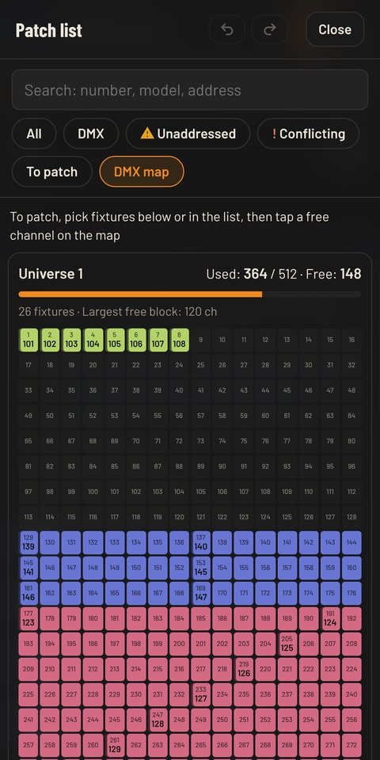

2D 仕込み図3D
2D 仕込み図3D仕込み図
仕込み図と吊り位置
ステージ、Truss、サイド Truss、Tower を実寸で組み立てます。各 Fixture は Ch、DMX アドレス、カラーフィルター、Gobo とともに図面に配置され、同じ図面がワンタップで 3D になります。
- 額縁舞台、ブラックボックス、アリーナ、TV スタジオのテンプレート
- 数千の Fixture モデル、GDTF の本体とシンボル
- 正面図と側面図で高さを編集
劇場 · コンサート · ツアー
仕込み図、Patch リスト、Focus メモ、Rider をひとつのプロジェクトに。スマートフォンとタブレットで動き、ネット接続もアカウントも不要です。
LampOff
ステージの寸法、Truss、Fixture を一度入力すれば、3D ビュー、Patch リスト、DMX マップ、ツアー用の書類一式が同じプロジェクトから出てきます。無料、広告なし。現在はトルコ語と英語に対応し、7.12.8 でさらに 9 言語が加わります。
2D 仕込み図3D仕込み図
ステージ、Truss、サイド Truss、Tower を実寸で組み立てます。各 Fixture は Ch、DMX アドレス、カラーフィルター、Gobo とともに図面に配置され、同じ図面がワンタップで 3D になります。

3D
3D は仕込み図のステージそのものです。Truss、幕、セット、客席が同じ位置にあります。ビームは当たった面で止まり、スモーク、客電、床の設定でリハーサル前に見え方を確認できます。


Patch
Universe の使用状況、アドレスの重複、未アドレスの Fixture をひとつのリストで管理。DMX マップは各 Universe の 512 Ch をカラーで表示し、Focus モードは Ch 順にフォーカス作業を追います。


Rider
縮尺図、機材・電源リスト、Truss 荷重、Ch リスト、位置リスト、マジックシート、Focus 記録をひとつの PDF に。Patch データは MVR、grandMA2 XML、USITT ASCII、CSV で書き出せます。
使用例
ステージテンプレートからプロジェクトを開き、タップで Fixture を Truss に吊り、自動 Patch がアドレスを割り当てて DMX マップに表示、Rider がページプレビュー付きで開きます。アプリ自体で録画しています。
サンプル公演
LampOff で準備した演劇公演の数字です。仕込み図、Patch、Rider がひとつのファイルに。すべてスマートフォンで作成しました。
書類
縮尺図からマジックシートまで、すべてのページが同じプロジェクトから作られます。
互換性
プロジェクトデータはこれらのシステムと双方向にやり取りできます。
技術情報